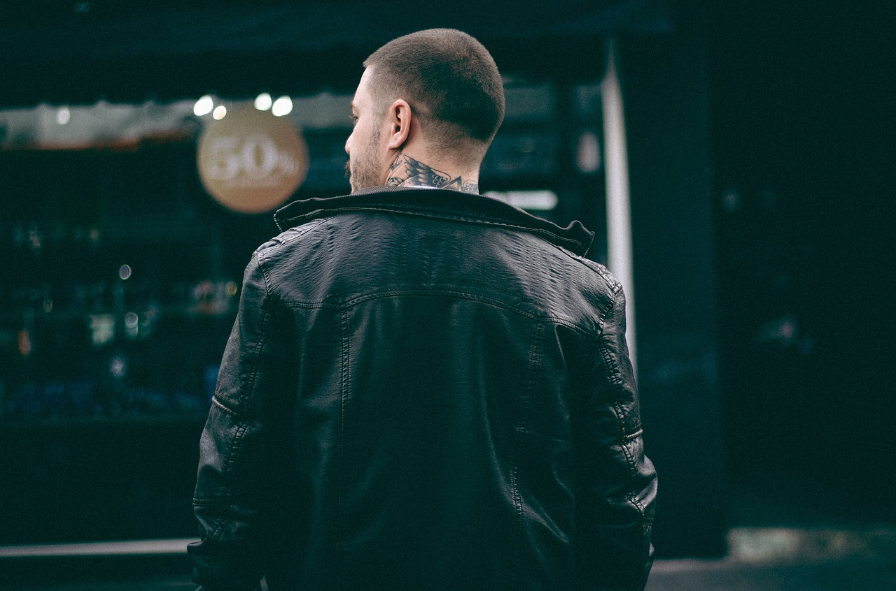
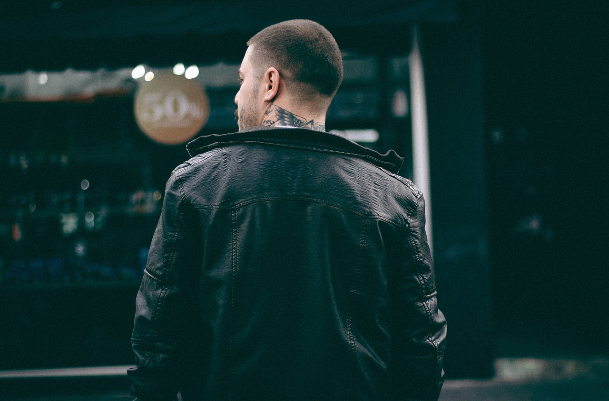

Welcome
Wardrobe


 


Products

Our Classic Blue Denim Jeans are a timeless staple for any wardrobe, featuring a traditional five-pocket design and a flattering straight-leg fit. Crafted from premium cotton blend for comfort and durability, these jeans are perfect for everyday wear or a night out. The subtle wash and classic blue color make them versatile for any outfit or occasion.
Made with a high-quality blend of 98% cotton and 2% elastane, our jeans offer both comfort and flexibility. The material is sourced sustainably, ensuring environmental responsibility without compromising on durability and wearability.
To maintain the quality and longevity of your jeans, machine wash cold with like colors and tumble dry on low. Avoid using bleach and iron on a low setting if necessary. For best results, turn the jeans inside out before washing to preserve the color.
Our jeans come in a range of sizes from 28 to 38 waist measurements. For a perfect fit, measure your waist at the narrowest point and refer to our sizing chart. The straight-leg cut is designed to suit various body types, offering a comfortable and stylish silhouette.

Elevate your style with our Premium Black Leather Jacket, crafted from the finest genuine leather for a luxurious feel and durability. Featuring a classic design with a modern twist, this jacket includes a zippered front, high-collar design, and multiple pockets for functionality. Perfect for both casual outings and more formal events, its sleek silhouette ensures a flattering fit for all body types.
Constructed with 100% genuine leather, our jacket promises unparalleled quality and comfort. The inner lining is made of a soft, breathable fabric to ensure warmth and ease of wear throughout the day. Attention to detail is evident in every stitch, ensuring a piece that withstands the test of time.
For lasting elegance, professional leather cleaning is recommended. Avoid exposure to water and direct heat. Store in a cool, dry place away from direct sunlight. Use a leather conditioner periodically to maintain its sheen and prevent cracking.
Available in sizes from S to XXL. For the best fit, measure your chest and refer to our sizing chart. This jacket is designed to offer a slim fit while providing enough room for comfort, making it suitable for layering over your favorite outfits.

Designed for the modern adventurer, the Explorer's Rugged Backpack combines durability with style. Crafted from high-quality, water-resistant materials, this backpack is built to withstand the elements while keeping your belongings safe. Features include a spacious main compartment, a padded laptop sleeve, multiple zipped pockets for easy organization, and adjustable, padded shoulder straps for maximum comfort. Whether you're heading to the office or exploring the great outdoors, this backpack is your perfect companion.
Made with a premium, water-resistant nylon exterior and a durable polyester lining, our backpack is designed for both longevity and performance. Heavy-duty zippers and reinforced stitching in key areas ensure your backpack can handle the rigors of daily use.
To clean, wipe down with a damp cloth and mild soap. Avoid machine washing or using harsh chemicals that can damage the fabric. Air dry away from direct sunlight to maintain the integrity of the materials.
Dimensions: 18" H x 12" W x 8" D. The main compartment is spacious enough for daily essentials, with a separate laptop sleeve accommodating up to a 15-inch laptop. Adjustable straps ensure a comfortable fit for all body sizes.
Experience timeless style with our Classic Fit Cotton Polo Shirt, designed for comfort and versatility. Made from 100% premium cotton, this polo shirt features a soft and breathable fabric that's perfect for any occasion. With a two-button placket, ribbed polo collar, and short sleeves with ribbed armbands, it offers a classic fit that's not too tight or too loose. Available in a variety of colors, it's a staple piece for any wardrobe.
This polo shirt is crafted from 100% premium cotton, ensuring a soft and comfortable wear. The high-quality fabric is designed to maintain its shape and color through regular washing and wear.
Machine wash cold with like colors. Tumble dry on low heat or hang dry to preserve the fabric's integrity. Iron on a cool setting if necessary. Do not bleach.
Available in sizes S to XXL. Our Classic Fit is designed to provide a relaxed and comfortable fit. Please refer to our sizing chart for detailed measurements to ensure the perfect fit.
Contact Us
Contact Number : +6391287374621
Email : anthonymagbanua.bsit@gmail.com
Telephone Number : 2202-9328-1823
More Information
Located at San Jose, Occidental Mindoro
Liboro St., 3rd Floor
Developed by: Anthony John S. Magbanua